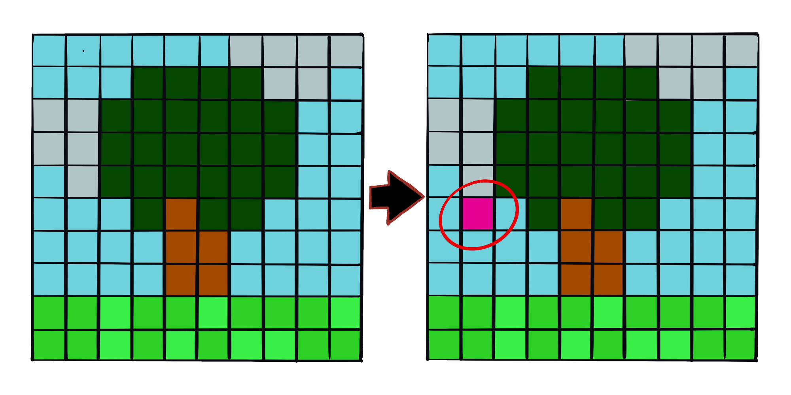
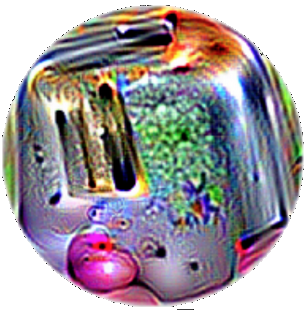
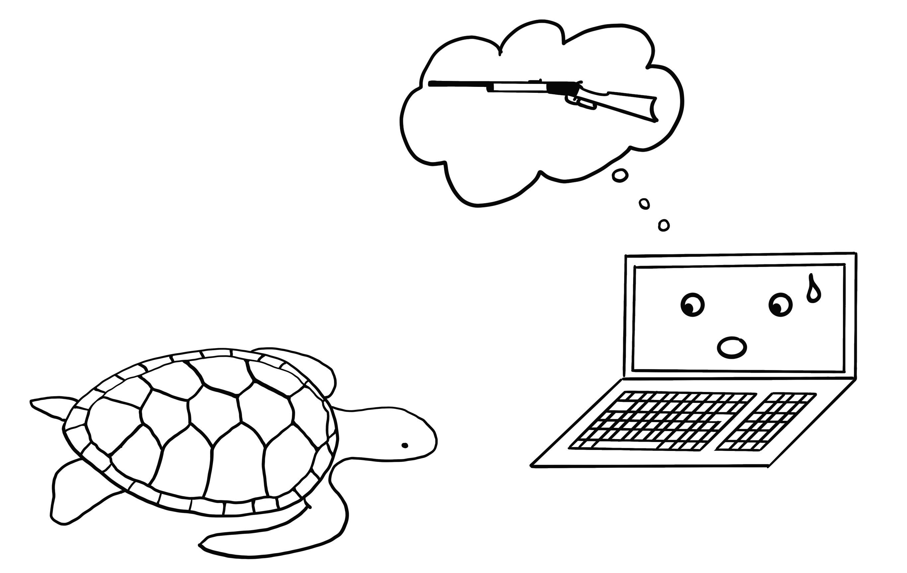

En cours de traduction.
10.4 - Exemples adverses {sec-adversarial_examples}
Un exemple adversaire est une instance avec de petites perturbations intentionnelles de caractéristiques qui amènent un modèle d’apprentissage automatique à faire une fausse prédiction. Je recommande de lire d’abord le chapitre consacré aux explications contrefactuelles, car les concepts sont très similaires. Les exemples adverses sont des exemples contrefactuels visant à tromper le modèle, et non à l’interpréter.
Pourquoi sommes-nous intéressés par les exemples adverses ? Ne sont-ils pas juste des sous-produits curieux des modèles d’apprentissage automatique sans pertinence pratique ? La réponse est clairement “non”. Les exemples adverses rendent les modèles d’apprentissage automatique vulnérables aux attaques, comme dans les scénarios suivants.
Une voiture autonome entre en collision avec une autre voiture parce qu’elle ignore un panneau stop. Quelqu’un avait placé une image sur le panneau, qui ressemble à un panneau stop avec un peu de saleté pour les humains, mais était conçu pour ressembler à un panneau d’interdiction de stationner pour le logiciel de reconnaissance de panneaux de la voiture.
Un détecteur de spam échoue à classer un courriel comme spam. Le mail spam a été conçu pour ressembler à un courriel normal, mais avec l’intention de tromper le destinataire.
Un scanner propulsé par l’apprentissage automatique analyse les valises à la recherche d’armes à l’aéroport. Un couteau a été développé pour éviter la détection en faisant croire au système qu’il s’agit d’un parapluie.
Jetons un coup d’œil à certaines manières de créer des exemples adverses.
10.4.1 Méthodes et exemples
Il existe de nombreuses techniques pour créer des exemples adverses. La plupart des approches suggèrent de minimiser la distance entre l’exemple adverse et l’instance à manipuler, tout en déplaçant la prédiction vers le résultat souhaité (adverse). Certaines méthodes nécessitent un accès aux gradients du modèle, ce qui ne fonctionne bien sûr qu’avec des modèles basés sur des gradients tels que les réseaux neuronaux, d’autres méthodes ne nécessitent qu’un accès à la fonction de prédiction, ce qui rend ces méthodes agnostiques au modèle. Les méthodes de cette section se concentrent sur les classificateurs d’images avec des réseaux neuronaux profonds, car beaucoup de recherches sont effectuées dans ce domaine et la visualisation des images adverses est très éducative. Les exemples adverses pour les images sont des images avec des pixels intentionnellement perturbés dans le but de tromper le modèle lors du temps d’application. Les exemples démontrent de manière impressionnante à quel point les réseaux neuronaux profonds pour la reconnaissance d’objets peuvent être facilement trompés par des images qui semblent inoffensives pour les humains. Si vous n’avez pas encore vu ces exemples, vous pourriez être surpris, car les changements dans les prédictions sont incompréhensibles pour un observateur humain. Les exemples adverses sont comme des illusions d’optique, mais pour les machines.
10.4.1.1 - Quelque chose ne va pas avec mon chien
Szegedy et al. (2013)1 ont utilisé une approche d’optimisation basée sur le gradient dans leur travail “Propriétés Intrigantes des Réseaux Neuronaux” pour trouver des exemples adverses pour les réseaux neuronaux profonds.

Ces exemples adverses ont été générés en minimisant la fonction suivante par rapport à \(r\) :
\[loss(\hat{f}(x+r),l)+c \cdot |r|\]
Dans cette formule, \(x\) est une image (représentée comme un vecteur de pixels), \(r\) est les changements apportés aux pixels pour créer une image adverse (\(x+r\) produit une nouvelle image), \(l\) est la classe de résultat souhaitée, et le paramètre \(c\) est utilisé pour équilibrer la distance entre les images et la distance entre les prédictions. Le premier terme est la distance entre le résultat prédit de l’exemple adverse et la classe désirée \(l\), le deuxième terme mesure la distance entre l’exemple adverse et l’image originale. Cette formulation est presque identique à la fonction de perte pour générer des explications contrefactuelles. Il y a des contraintes supplémentaires pour \(r\) afin que les valeurs des pixels restent entre \(0\) et \(1\). Les auteurs suggèrent de résoudre ce problème d’optimisation avec un L-BFGS à contraintes de boîte, un algorithme d’optimisation qui fonctionne avec des gradients.
10.4.1.2 - Panda perturbé : méthode du signe de gradient rapide
Goodfellow et al. (2014)2 ont inventé la méthode du signe de gradient rapide pour générer des images adverses. La méthode du signe de gradient utilise le gradient du modèle sous-jacent pour trouver des exemples adverses. L’image originale x est manipulée en ajoutant ou en soustrayant une petite erreur \(\epsilon\) à chaque pixel. Le fait d’ajouter ou de soustraire \(\epsilon\) dépend de si le signe du gradient pour un pixel est positif ou négatif. Ajouter des erreurs dans la direction du gradient signifie que l’image est intentionnellement altérée de sorte que la classification du modèle échoue.
La formule suivante décrit le cœur de la méthode du signe de gradient rapide :
\[x^\prime=x+\epsilon\cdot{}sign(\bigtriangledown_x{}J(\theta,x,y))\]
où \(\bigtriangledown_x{}J\) est le gradient de la fonction de perte du modèle par rapport au vecteur de pixels d’entrée original \(x\), \(y\) est le vecteur d’étiquettes réelles pour \(x\) et \(\theta\) est le vecteur de paramètres du modèle. Du vecteur de gradient (qui est aussi long que le vecteur des pixels d’entrée), nous n’avons besoin que du signe : Le signe du gradient est positif (\(+1\)) si une augmentation de l’intensité des pixels augmente la perte (l’erreur que fait le modèle) et négatif (\(-1\)) si une diminution de l’intensité des pixels augmente la perte. Cette vulnérabilité se produit lorsque un réseau neuronal traite une relation entre l’intensité d’un pixel d’entrée et le score de classe de manière linéaire. En particulier, les architectures de réseau neuronal qui favorisent la linéarité, telles que les LSTMs, les réseaux maxout, les réseaux avec des unités d’activation ReLU ou d’autres algorithmes d’apprentissage automatique linéaires tels que la régression logistique, sont vulnérables à la méthode du signe de gradient. L’attaque est réalisée par extrapolation. La linéarité entre l’intensité des pixels d’entrée et les scores de classe conduit à une vulnérabilité aux valeurs aberrantes, c’est-à-dire que le modèle peut être trompé en déplaçant les valeurs des pixels dans des zones en dehors de la distribution des données. Je m’attendais à ce que ces exemples adverses soient assez spécifiques à une architecture de réseau neuronal donnée. Mais il s’avère que vous pouvez réutiliser des exemples adverses pour tromper des réseaux avec une architecture différente formés sur la même tâche.
Goodfellow et al. (2014) ont suggéré d’ajouter des exemples adverses aux données d’entraînement pour apprendre des modèles robustes.
10.4.1.3 - Une méduse… Non, attendez. Une baignoire : Attaques à un pixel
L’approche présentée par Goodfellow et ses collègues (2014) nécessite de changer de nombreux pixels, même si ce n’est que de peu. Mais que se passerait-il si vous ne pouviez changer qu’un seul pixel ? Pourriez-vous tromper un modèle d’apprentissage automatique ? Su et al. (2019)3 ont montré qu’il est effectivement possible de tromper des classificateurs d’images en changeant un seul pixel.

Semblable aux contrefactuels, l’attaque à un pixel cherche un exemple modifié \(x^\prime\) qui se rapproche de l’image originale \(x\), mais change la prédiction pour un résultat adverse. Cependant, la définition de la proximité diffère : seul un seul pixel peut changer. L’attaque à un pixel utilise l’évolution différentielle pour déterminer quel pixel doit être changé et comment. L’évolution différentielle s’inspire librement de l’évolution biologique des espèces. Une population d’individus appelés solutions candidates se recombinent génération après génération jusqu’à ce qu’une solution soit trouvée. Chaque solution candidate encode une modification de pixel et est représentée par un vecteur de cinq éléments : les coordonnées \(x\) et \(y\) et les valeurs des composantes rouge, vert et bleu (RVB). La recherche commence avec, par exemple, 400 solutions candidates (i.e suggestions de modification de pixel) et crée une nouvelle génération de solutions candidates (enfants) à partir de la génération parente en utilisant la formule suivante :
\[x_{i}(g+1)=x_{r1}(g)+F\cdot(x_{r2}(g)-x_{r3}(g))\]
où chaque \(x_i\) est un élément d’une solution candidate (soit coordonnée \(x\), coordonnée \(y\), valeurs des compodantes rouge, vert ou bleu), \(g\) est la génération actuelle, \(F\) est un paramètre d’échelle (fixé à \(0,5\)) et \(r1\), \(r2\) et \(r3\) sont des nombres aléatoires différents. Chaque nouvelle solution candidate enfant est à son tour un pixel avec les cinq attributs pour l’emplacement et la couleur et chacun de ces attributs est un mélange de trois pixels parents aléatoires.
Possible problème de traduction du sens dans le paragraphe ci-sessus : Each new child candidate solution is in turn a pixel with the five attributes for location and color and each of those attributes is a mixture of three random parent pixels.
La création de solutions candidates est arrêtée si l’une des solutions candidates est un exemple adverse, c’est-à-dire qu’elle est classée dans une classe incorrecte, ou si le nombre maximum d’itérations spécifié par l’utilisateur est atteint.
10.4.1.4 - Tout est un grille-pain : patch adversaire
Une de mes méthodes préférées amène les exemples adverses dans la réalité physique. Brown et al. (2017)4 ont conçu une étiquette imprimable qui peut être collée à côté d’objets pour les faire ressembler à des grille-pains pour un classificateur d’images. Un travail brillant !

Cette méthode diffère des méthodes présentées jusqu’à présent pour les exemples adverses, puisque la restriction impliquant que l’image adverse doit être très proche de l’image originale est supprimée. Au lieu de cela, la méthode remplace complètement une partie de l’image par un patch qui peut prendre n’importe quelle forme. L’image du patch est optimisée sur différentes images de fond, avec différentes positions du patch sur les images, parfois déplacé, parfois agrandi ou réduit et tourné, de sorte que le patch fonctionne dans de nombreuses situations. À la fin, cette image optimisée peut être imprimée et utilisée pour tromper les classificateurs d’images en situation réelle.
10.4.1.5 - N’apportez jamais une tortue imprimée en 3D à un combat de pistolets – même si votre ordinateur pense que c’est une bonne idée : exemples adverses robustes
La méthode suivante ajoute littéralement une autre dimension au grille-pain : Athalye et al. (2017)5 ont imprimé en 3D une tortue conçue pour ressembler à un fusil pour un réseau neuronal profond sous presque tous les angles possibles. Oui, vous avez bien lu. Un objet physique qui ressemble à une tortue pour les humains ressemble à un fusil pour l’ordinateur !

Les auteurs ont trouvé un moyen de créer un exemple adverse en 3D pour un classificateur 2D qui est adverse sur des transformations, telles que toutes les possibilités de faire tourner la tortue, de zoomer, etc. D’autres approches telles que la méthode du gradient rapide ne fonctionnent plus lorsque l’image est tournée ou que l’angle de vue change. Athalye et al. (2017)^turtle] proposent l’algorithme Expectation Over Transformation (EOT), qui est une méthode pour générer des exemples adverses qui fonctionnent même lorsque l’image est transformée. L’idée principale derrière EOT est d’optimiser des exemples adverses sur de nombreuses transformations possibles. Au lieu de minimiser la distance entre l’exemple adverse et l’image originale, EOT maintient la distance attendue entre les deux en dessous d’un certain seuil, étant donné une distribution sélectionnée de transformations possibles. La distance attendue sous transformation peut s’écrire comme :
\[\mathbb{E}_{t\sim{}T}[d(t(x^\prime),t(x))]\]
où \(x\) est l’image originale, \(t(x)\) l’image transformée (par exemple, tournée), \(x'\) l’exemple adverse et \(t(x^\prime)\) sa version transformée. Outre le travail avec une distribution de transformations, la méthode EOT suit le schéma familier de cadrer la recherche d’exemples adverses comme un problème d’optimisation. Nous essayons de trouver un exemple adverse \(x^\prime\) qui maximise la probabilité pour la classe sélectionnée \(y_t\) (par exemple, “fusil”) à travers la distribution de transformations possibles \(T\) :
\[\arg\max_{x^\prime}\mathbb{E}_{t\sim{}T}[log{}P(y_t|t(x^\prime))]\]
Avec la contrainte que la distance attendue sur toutes les transformations possibles entre l’exemple adverse \(x^\prime\) et l’image originale \(x\) reste en dessous d’un certain seuil :
\[\mathbb{E}_{t\sim{}T}[d(t(x^\prime),t(x))]<\epsilon\quad\text{and}\quad{}x\in[0,1]^d\]
Je pense que nous devrions être préoccupés par les possibilités que cette méthode permet. Les autres méthodes sont basées sur la manipulation d’images numériques. Cependant, ces exemples adverses robustes imprimés en 3D peuvent être insérés dans n’importe quelle scène réelle et tromper un ordinateur pour mal classer un objet. Retournons la situation : et si quelqu’un crée un fusil qui ressemble à une tortue ?
10.4.1.6 - L’adversaire aux yeux bandés : attaque de la boîte noire
Imaginez le scénario suivant : Je vous donne accès à mon excellent classificateur d’images via une API Web. Vous pouvez obtenir des prédictions du modèle, mais vous n’avez pas accès aux paramètres du modèle. Depuis le confort de votre canapé, vous pouvez envoyer des données et mon service répond avec les classifications correspondantes. La plupart des attaques adverses ne sont pas conçues pour fonctionner dans ce scénario car elles nécessitent un accès au gradient du réseau neuronal profond sous-jacent pour trouver des exemples adverses. Papernot et ses collègues (2017)6 ont montré qu’il est possible de créer des exemples adverses sans informations internes sur le modèle et sans accès aux données d’entraînement. Ce type d’attaque (presque) sans connaissance préalable est appelé attaque de boîte noire.
Comment ça fonctionne :
- Commencez avec quelques images qui proviennent du même domaine que les données d’entraînement, par exemple, si le classificateur à attaquer est un classificateur de chiffres, utilisez des images de chiffres. La connaissance du domaine est requise, mais pas l’accès aux données d’entraînement.
- Obtenez des prédictions pour l’ensemble actuel d’images de la boîte noire.
- Entraînez un modèle substitut sur l’ensemble actuel d’images (par exemple, un réseau neuronal).
- Créez un nouvel ensemble d’images synthétiques en utilisant une heuristique qui examine, pour l’ensemble actuel d’images, dans quelle direction manipuler les pixels pour que la sortie du modèle ait plus de variance.
- Répétez les étapes 2 à 4 pour un nombre prédéfini d’époques.
- Créez des exemples adverses pour le modèle substitut en utilisant la méthode du gradient rapide (ou similaire).
- Attaquez le modèle original avec des exemples adverses.
Le but du modèle substitut est d’approximer les frontières de décision du modèle de la boîte noire, mais pas nécessairement d’atteindre la même précision.
Les auteurs ont testé cette approche en attaquant des classificateurs d’images formés sur divers services en ligne d’apprentissage automatique. Ces services forment des classificateurs d’images sur des images et des étiquettes téléchargées par les utilisateurs. Le logiciel entraine automatiquement le modèle – parfois avec un algorithme inconnu de l’utilisateur – et le déploie. Le classificateur donne alors des prédictions pour les images téléchargées, mais le modèle lui-même ne peut être inspecté ou téléchargé. Les auteurs ont pu trouver des exemples adverses pour divers fournisseurs, avec jusqu’à 84% des exemples adverses mal classés.
La méthode fonctionne même si le modèle “boîte noire” à tromper n’est pas un réseau neuronal. Cela inclut des modèles d’apprentissage automatique sans gradient tels que des arbres de décision.
10.4.2 La perspective de la cybersécurité
L’apprentissage automatique traite des inconnus connus : la prédiction de points de données inconnus à partir d’une distribution connue. La défense contre les attaques traite des inconnus inconnus : prédire de manière robuste des points de données inconnus à partir d’une distribution inconnue d’entrées adverses. À mesure que l’apprentissage automatique est intégré dans de plus en plus de systèmes, tels que les véhicules autonomes ou les dispositifs médicaux, ils deviennent également des points d’entrée pour les attaques. Même si les prédictions d’un modèle d’apprentissage automatique sur un ensemble de test sont correctes à 100 %, des exemples adverses peuvent être trouvés pour tromper le modèle. La défense des modèles d’apprentissage automatique contre les cyberattaques est une nouvelle partie du domaine de la cybersécurité.
Biggio et al. (2018)7 donnent un bon aperçu de dix années de recherche sur l’apprentissage automatique adversaire, sur lesquelles cette section est basée. La cybersécurité est une course aux armements dans laquelle les attaquants et les défenseurs se surpassent à maintes reprises.
Il existe trois règles d’or en cybersécurité : 1) connaître son adversaire, 2) être proactif et 3) se protéger.
Différentes applications ont différents adversaires. Les personnes qui tentent de frauder d’autres personnes par courrier électronique pour voler leur argent sont des agents adversaires des utilisateurs et des fournisseurs de services de messagerie. Les fournisseurs veulent protéger leurs utilisateurs, afin qu’ils puissent continuer à utiliser leur programme de messagerie, les attaquants veulent amener les gens à leur donner de l’argent. Connaître ses adversaires signifie connaître leurs objectifs. En supposant que vous ne savez pas que ces spammeurs existent et que le seul abus du service de messagerie est l’envoi de copies piratées de musique, alors la défense serait différente (par exemple, analyser les pièces jointes pour du matériel protégé par le droit d’auteur au lieu d’analyser le texte pour des indicateurs de spam).
Être proactif signifie tester activement et identifier les points faibles du système. Vous êtes proactif lorsque vous essayez activement de tromper le modèle avec des exemples adverses, puis vous défendez contre eux. Utiliser des méthodes d’interprétation pour comprendre quelles caractéristiques sont importantes et comment les caractéristiques affectent la prédiction est également une étape proactive pour comprendre les faiblesses d’un modèle d’apprentissage automatique. En tant que data scientist, faites-vous confiance à votre modèle dans ce monde dangereux sans jamais avoir regardé au-delà de la puissance prédictive sur un ensemble de test ? Avez-vous analysé comment le modèle se comporte dans différents scénarios, identifié les entrées les plus importantes, vérifié les explications des prédictions pour certains exemples ? Avez-vous essayé de trouver des entrées adverses ? L’interprétabilité des modèles d’apprentissage automatique joue un rôle majeur en cybersécurité. Être réactif, l’opposé de proactif, signifie attendre que le système ait été attaqué et seulement alors comprendre le problème et installer des mesures de défense.
Comment pouvons-nous protéger nos systèmes d’apprentissage automatique contre les exemples adverses ? Une approche proactive est la reformation itérative du classificateur avec des exemples adverses, également appelée entraînement adverse. D’autres approches sont basées sur la théorie des jeux, telles que l’apprentissage de transformations invariantes des caractéristiques ou l’optimisation robuste (régularisation). Une autre méthode proposée est d’utiliser plusieurs classificateurs au lieu d’un seul et de les faire voter pour la prédiction (ensemble), mais cela n’a aucune garantie de fonctionner, car ils pourraient tous souffrir de similaires exemples adverses. Une autre approche qui ne fonctionne pas bien non plus est le masquage du gradient, qui construit un modèle sans gradients utiles en utilisant un classificateur du plus proche voisin au lieu du modèle original.
Nous pouvons distinguer les types d’attaques en fonction de la connaissance qu’a l’attaquant du système.
- Les attaquants peuvent avoir une connaissance parfaite (attaque de boîte blanche), ce qui signifie qu’ils savent tout sur le modèle, comme le type de modèle, les paramètres et les données d’entraînement ;
- Les attaquants peuvent avoir une connaissance partielle (attaque de boîte grise), ce qui signifie qu’ils pourraient seulement connaître la représentation des caractéristiques et le type de modèle utilisé, mais n’ont pas accès aux données d’entraînement ou aux paramètres ;
- Les attaquants peuvent n’avoir aucune connaissance (attaque de boîte noire), ce qui signifie qu’ils ne peuvent interroger le modèle que de manière boîte noire, et n’ont pas accès aux données d’entraînement ni aux informations sur les paramètres du modèle. Selon le niveau d’information, les attaquants peuvent utiliser différentes techniques pour attaquer le modèle.
Comme nous l’avons vu dans les exemples, même dans le cas de la boîte noire, des exemples adverses peuvent être créés, de sorte que cacher des informations sur les données et le modèle n’est pas suffisant pour se protéger contre les attaques.
Étant donné la nature du jeu du chat et de la souris entre les attaquants et les défenseurs, nous assisterons à beaucoup de développements et d’innovations dans ce domaine. Pensez juste aux nombreux types différents de courriels indésirables qui évoluent constamment. De nouvelles méthodes d’attaques contre les modèles d’apprentissage automatique sont inventées et de nouvelles mesures défensives sont proposées contre ces nouvelles attaques. Des attaques plus puissantes sont développées pour éviter les dernières défenses et ainsi de suite, ad infinitum. Avec ce chapitre, j’espère vous avoir sensibilisé au problème des exemples adverses et que seulement en étudiant de manière proactive les modèles d’apprentissage automatique nous serons capables de découvrir et de remédier à leurs faiblesses.
Notes de bas de page
Szegedy, Christian, Wojciech Zaremba, Ilya Sutskever, Joan Bruna, Dumitru Erhan, Ian Goodfellow, and Rob Fergus. “Intriguing properties of neural networks.” arXiv preprint arXiv:1312.6199 (2013).↩︎
Goodfellow, Ian J., Jonathon Shlens, and Christian Szegedy. “Explaining and harnessing adversarial examples.” arXiv preprint arXiv:1412.6572 (2014).↩︎
Su, Jiawei, Danilo Vasconcellos Vargas, and Kouichi Sakurai. “One pixel attack for fooling deep neural networks.” IEEE Transactions on Evolutionary Computation (2019).↩︎
Brown, Tom B., Dandelion Mané, Aurko Roy, Martín Abadi, and Justin Gilmer. “Adversarial patch.” arXiv preprint arXiv:1712.09665 (2017).↩︎
Athalye, Anish, and Ilya Sutskever. “Synthesizing robust adversarial examples.” arXiv preprint arXiv:1707.07397 (2017).↩︎
Papernot, Nicolas, et al. “Practical black-box attacks against machine learning.” Proceedings of the 2017 ACM on Asia Conference on Computer and Communications Security. ACM (2017).↩︎
Biggio, Battista, and Fabio Roli. “Wild Patterns: Ten years after the rise of adversarial machine learning.” Pattern Recognition 84 (2018): 317-331.↩︎